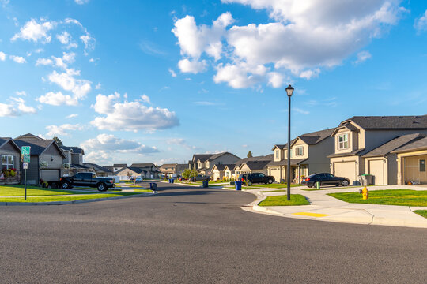
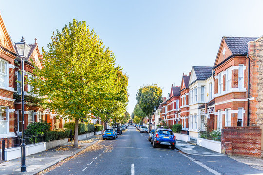
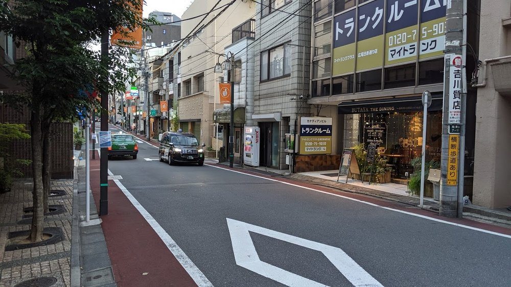
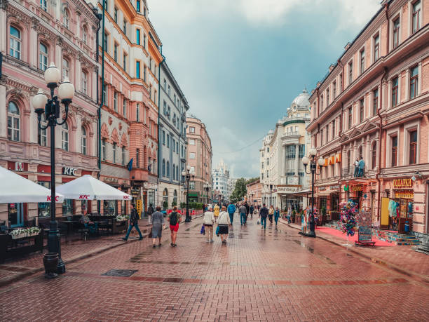
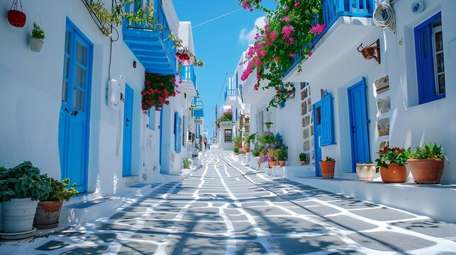

Blog
American Streets

- American streets on the West Coast, especially in cities like San Francisco and Los Angeles, are known for their distinctive layouts and scenic views.
- Streets in these areas often feature hilly terrains, coastal landscapes, and a mix of grid and winding road systems.
- Urban streets are designed with an emphasis on accessibility, with bike lanes, pedestrian-friendly sidewalks, and vibrant neighborhoods.
British Streets

- British streets with row houses are characterized by rows of terraced homes, often built in uniform styles, offering a sense of community and architectural cohesion.
- These homes are typically narrow and multi-storied, reflecting the practicality of space in urban areas.
- The design is a hallmark of British urban planning, especially in cities like London, where row houses line many of the streets, blending history with modern living.
Japanese Streets

- Japanese streets with small shops in neighborhoods are known for their cozy, community-focused atmosphere, where local businesses thrive.
- These streets often feature narrow lanes lined with charming stores selling everything from fresh produce to unique crafts.
- The blend of traditional wooden houses and modern shops creates a warm, inviting environment, offering a glimpse into daily life and culture in places like Tokyo's "shotengai" (shopping streets).
Russian Streets

- Russian streets oft en reflect the country's vast history and culture, with wide avenues and grand squares in cities like Moscow and St. Petersburg.
- Many streets are lined with monumental Soviet-era buildings, while others feature classic architecture with intricate details.
- The streets, especially in urban areas, are busy with a mix of cars, pedestrians, and public transportation, creating a dynamic and diverse atmosphere.
Greek Streets

- Greek streets, particularly in cities like Athens, are a blend of ancient history and modern life, with narrow cobblestone alleys leading to bustling squares.
- Many streets are lined with vibrant cafes, shops, and traditional buildings, often reflecting Greek architecture and culture.
- The mix of historical ruins and contemporary structures gives Greek streets a unique, timeless charm.